Latent Diffusion Series: Variational Autoencoder (VAE)
In the Latent Diffusion Series of blog posts, I'm going through all components needed to train a latent diffusion model to generate random digits from the MNIST dataset. In the second post, we will build and train a variational autoencoder to generate MNIST digits. The latent variables of these models are defined to be normally distributed, something that will later enable our diffusion model operate in the latent space. For the other posts, please look below:
- MNIST Classifier
- Variational Autoencoder (VAE)
- Latent Diffusion Model
The links will become active as soon as they the posts are completed. Even though this blog post is part of a series, I will try my best to write it in such a way that it's not required to have read the previous blog posts.
In this post I will introduce the Variational Autoencoder(VAE) model. We will train the VAE on the MNIST dataset and try to generate some digits by sampling the latent space. If you'd like a bit more about the MNIST dataset, please look at the previous blog post on the MNIST Classifier, where I also explore the dataset and show how to easily use it in Pytorch. I have created a Python notebook on Colab, which you can use to follow along and experiment with this post's code.
Autoencoder
The Variational Autoencoder as the name suggests, is called an autoencoder because it resembles the traditional autoencoder model in the sense that the model is trained in such a way that its output is made to resemble the input. The encoder part of the autoencoder means we encode the input into latent variables by reducing the dimensionality. This dimensionality reduction is also known as a 'bottleneck', and can additionally be seen as compression of the information that goes in.
Conceptually, we usually split the autoencoder in an encoder part which encodes the input into the latent space, and a decoder, which decodes the latent variable back into the input space. — It might be pertinent to discuss briefly what a latent space actually is. I will spare you the details, for that please check the Wikipedia link, but with latent space we generally mean a lower dimensional space which encodes the original data space, with the latent variables being the coordinates of this space. This can also be viewed as data compression, just like image compression. — Getting back to our autoencoder, if you are particularly creative, you might think of sampling these latent variables randomly and passing them to the decoder to generate outputs that resemble the inputs the model was trained on. Unfortunately, the distribution of the latent variables in a traditional autoencoder is generally not known, so it's difficult to sample them and generate novel outputs without going out of distribution.
To see how bad the samples look like when generated by randomly sampling the autoencoder latent variable, let's first build and train a simple 2D autonecoder for the MNIST dataset.
 The diagram shows how we have split the architecture in an encoder part on the left, and a decoder part on the right, which I have tried to keep fairly symmetrical. The reason I'm using this architecture, here, will become clearer on the next post, but this is basically the backbone of a Unet, i.e. without the skip connections. The basic building block is a convolution followed by a batch normalization and finally a Leaky ReLU activation. The encoder and decoder are made up of 4 levels, where each level is subsampled or upsampled, respectively, and is followed by two of these convolutional blocks. The latent code output by the encoder is 4x4x4, or 16 dimensional when flattened. These 16 variables need to encode the different hand-written digits. In total the autoencoder model shown above has 51357 parameters.
The diagram shows how we have split the architecture in an encoder part on the left, and a decoder part on the right, which I have tried to keep fairly symmetrical. The reason I'm using this architecture, here, will become clearer on the next post, but this is basically the backbone of a Unet, i.e. without the skip connections. The basic building block is a convolution followed by a batch normalization and finally a Leaky ReLU activation. The encoder and decoder are made up of 4 levels, where each level is subsampled or upsampled, respectively, and is followed by two of these convolutional blocks. The latent code output by the encoder is 4x4x4, or 16 dimensional when flattened. These 16 variables need to encode the different hand-written digits. In total the autoencoder model shown above has 51357 parameters.
Let's now build the autoencoder using Pytorch:
class ConvBlock(torch.nn.Module): def __init__(self, fin, fout, *args, **kwargs): super(ConvBlock, self).__init__() self._conv = torch.nn.Conv2d(fin, fout, *args, **kwargs) self._norm = torch.nn.BatchNorm2d(fout) self._relu = torch.nn.LeakyReLU() def forward(self, x): return self._relu(self._norm(self._conv(x))) class ConvEncoder(torch.nn.Module): def __init__(self, features): super(ConvEncoder, self).__init__() layers = [] for i in range(len(features)-1): fi = features[i] fo = features[i+1] if i > 0: layers.append(torch.nn.Sequential( torch.nn.MaxPool2d(2), ConvBlock(fi, fo, 3, padding='same'), ConvBlock(fo, fo, 3, padding='same'), )) else: layers.append(torch.nn.Sequential( ConvBlock(fi, fo, 3, padding='same'), ConvBlock(fo, fo, 3, padding='same'), )) self.layers = torch.nn.ModuleList(layers) def forward(self, x): y = torch.clone(x) for layer in self.layers: y = layer(y) return y class ConvDecoder(torch.nn.Module): def __init__(self, features): super(ConvDecoder, self).__init__() layers = [] for i in range(len(features)-1): layer = [] fi = features[i] fo = features[i+1] if i > 0: layer += [ torch.nn.Upsample(scale_factor=2), ConvBlock(fi, fi, 3, padding='same'), ] if i < len(features)-2: layer += [ ConvBlock(fi, fi, 3, padding='same'), ConvBlock(fi, fo, 3, padding='same'), ] else: layer += [ ConvBlock(fi, fi, 3, padding='same'), torch.nn.Conv2d(fi, fo, 1, padding='same'), ] layers.append(torch.nn.Sequential(*layer)) self.layers = torch.nn.ModuleList(layers) def forward(self, x): y = torch.clone(x) for layer in self.layers: y = layer(y) return y class ConvAutoencoder(torch.nn.Module): def __init__(self, features): super(ConvAutoencoder, self).__init__() self.encoder = ConvEncoder(features) self.decoder = ConvDecoder(features[::-1]) def forward(self, x): return self.decoder(self.encoder(x))
You will notice that the code is a bit more generic than shown on the diagram. The number of levels are variable and are controlled by the features variable, which takes an array of the number of features for each level.
To train the model, we use the mean squared error loss between the input and output of the autoencoder, and use Adam2 as our optimizer of choice.
epochs = 400 batch_size = 128 learning_rate = 1e-3 i_log = 10 optimizer = torch.optim.Adam(autoencoder.parameters(), learning_rate) num_batches = int(math.ceil(x_train.shape[0] / batch_size)) losses = [] for i in range(num_epochs): autoencoder.train() train_ids = torch.randperm(x_train.shape[0]) average_loss = 0.0 for bid in range(num_batches): with torch.no_grad(): batch_ids = train_ids[bid*batch_size:(bid+1)*batch_size] x = x_train[batch_ids,None,...] x = x.to(device) x_pred = autoencoder(x) loss = torch.sum((x_pred - x)**2, dim=[1,2,3]) loss = torch.mean(loss) optimizer.zero_grad() loss.backward() optimizer.step() with torch.no_grad(): average_loss += loss.cpu().numpy() / num_batches if (i + 1) % i_log == 0: autoencoder.eval() with torch.no_grad(): val_loss = 0.0 x_val_pred = autoencoder(x_val[:,None,...].to(device)).cpu() val_loss = torch.sum( (x_val_pred - x_val[:,None,...])**2, dim=[1,2,3] ) val_loss = torch.mean(val_loss).numpy() losses.append([average_loss, val_loss]) print(f'Epoch {i} loss = {average_loss}, val_loss = {val_loss}')
The training code is fairly standard, so there's not much to say here. We can plot the train and validation loss as a function of the epochs,  which nicely starts evening out at about 400 epochs. We can visualize some example outputs from the trained autoencoder to see how well it's able to encode the digits: On the top I drew the original MNIST characters and on the bottom, the autoencoder output. You will notice that while it's doing a quite good job at encoding the digits, some details are lost, like the small line on the number 8. I should mention, though, that how good the autoencoder is able to reconstruct the input is really dependent on how big of a model we have chosen to use, and also the size of the latent space, among others things.
Given our trained autoencoder, let's now try to use it as a generative model. We first calculate the mean and standard deviation of the training dataset latent space:
with torch.no_grad(): autoencoder.eval() num_batches = int(math.ceil(x_train.shape[0] / batch_size)) z_train = [] for bid in range(num_batches): x = x_train[bid*batch_size:(bid+1)*batch_size,None,...] x = x.to(device) z = autoencoder.encoder(x) z_train.append(z) z_train = torch.cat(z_train) z_train_mean = torch.mean(z_train, dim=0, keepdim=True) z_train_std = torch.std(z_train, dim=0, keepdim=True)
Then, we generate a bunch of digits by sampling from a normal distribution with these means and standard deviations:
n = 10 z = torch.normal( z_train_mean.repeat(n, 1, 1, 1), z_train_std.repeat(n, 1, 1, 1) ) x_pred = autoencoder.decoder(z) x_pred = torch.clip(x_pred, 0.0, 1.0)
Finally, here are some digits generated this way: Although these generated images vaguely resemble digits, we can certainly see that this method of generation is really limited. The problem, lies with our simplified sampling approach which assumes the distribution of the latent space is normal. In most cases, when training an autoencoder, the latent space is not necessarily normally distributed. Furthermore, it's not sufficient that the latent space distribution can be easily sampled, but also that it's regular, i.e. that the space between the different latent points from the training set is meaningful.
Above you see a scatter plot of how two of the latent dimensions are correlated. The different colors encode the different digits. The distribution of points is clearly non-gaussian. Sampling from a gaussian distribution will also sample points which are far from the training set and, possibly, the decoder will not be able to interpolate these in a way that produces valid looking digits.
Summarizing, the big issues of vanilla autoencoders is that the resulting latent spaces are disjoint and have discontinuities, i.e. areas of low sample density. To showcase this, I used linear discriminant analysis to reduce the latent dimensionality to two dimensions while maximizing the separation of the different categories. This can easily be done using scikit-learn:
from sklearn.discriminant_analysis import LinearDiscriminantAnalysis clf = LinearDiscriminantAnalysis(n_components=2) # Here z is the latent variables and y_val are the digit labels. zr = clf.fit_transform(z.reshape((z.shape[0], -1)), y_val)
Plotting this reduced representation, the first issue, of a disjoint latent space, is evident. As we shall see later, in variational autoencoders, the different categories are better "mixed", allowing for greater interpolation.
Variational Autoencoder
The authors of the original VAE paper2 took a different approach at tackling the issues of generating samples \(\mathbf{x}\) from latent variable \(\mathbf{z}\). More specifically, they took a statistical approach, approximating the posterior distribution \(p(\mathbf{z}|\mathbf{x})\) using variational inference.
As Welling et al did in their paper2, let us define some dataset \(\mathbf{X} = \left\{ \mathbf{x}^{(i)} \right\}_{i=1}^N\) consisting of N i.i.d. samples of some continuous or discrete variable \(\mathbf{x}\), and let us assume that the data are generated by some random process, involving an unobserved continuous random variable \(\mathbf{z}\). The random (generative) process, consists of two steps: first, a value \(\mathbf{z}\) is generated from some prior distribution \(p(\mathbf{z})\), and then a value \(\mathbf{x}\) is generated from some conditional distribution \(p(\mathbf{x}|\mathbf{z})\). To implement this process, we need to calculate \(p(\mathbf{x}|\mathbf{z})\). Alternatively, we can view the problem as finding out the possible latent (hidden) variables that generated a data point. From Baye's theorem, we can also calculate the probability \(p(\mathbf{x}|\mathbf{z})\) as, \[ p(\mathbf{x}|\mathbf{z}) = \frac{p(\mathbf{z}|\mathbf{x}) p(\mathbf{x})}{p(\mathbf{z})} \] Unfortunately, the marginal likelihood (evidence) \(p(\mathbf{x}) = \int d\mathbf{z} p(\mathbf{z}) p(\mathbf{x} | \mathbf{z}) \) is generally intractable. This is where variational inference3 is used to approximate the posterior \(p(\mathbf{z}|\mathbf{x})\) with another, tractable distribution, \(q(\mathbf{z}|\mathbf{x})\). We can define the distribution \(q\) as a model with parameters \(\theta\); \( q_{\theta} ( \mathbf{z}|\mathbf{x} ) \). We call this model the encoder, and we can calculate its parameters using maximum likelihood estimation. In practice, because maximizing the likelihood \(p(\mathbf{x})\) is difficult, we end up maximizing the Evidence Lower Bound (ELBO): \[ \log p(\mathbf{x}) \geq \mathbb{E}_{q_{\theta}(\mathbf{z}|\mathbf{x})} \left[ \log \frac{p(\mathbf{x},\mathbf{z})}{q_{\theta}(\mathbf{z}|\mathbf{x})} \right] \] The above can be further estimated to be: \[ \mathbb{E}_{q_{\theta}(\mathbf{z}|\mathbf{x})} \left[ \log \frac{p(\mathbf{x},\mathbf{z})}{q_{\theta}(\mathbf{z}|\mathbf{x})} \right] = \mathbb{E}_{q_{\theta}(\mathbf{z}|\mathbf{x})} \left[ \log p_{\phi}(\mathbf{x} | \mathbf{z}) \right] - D_{KL}(q_{\theta}(\mathbf{z}|\mathbf{x}) \| p(\mathbf{z})) \] where \(D_{KL}\) is the Kullback-Leibler (KL) divergence. Note that we substituted \(p(\mathbf{x} | \mathbf{z})\) with a deterministic model with parameters \(\phi\), which we call the decoder. The first term, above, measures how well the input is reconstructed, just as in the autoencoder, while the second term measures how similar the learned variational distribution is to a prior belief held over latent variables. Minimizing this term encourages the encoder to actually learn a distribution rather than collapse into an ensemble of point functions.
When the input \(\mathbf{x}\) takes continuous values, both the evidence \(p(\mathbf{x})\) and the likelihood \(p(\mathbf{x} | \mathbf{z})\) are assumed to be Gaussian. This leads to the log likelihood term in the maximum likelihood estimation to take the form of the square distance between the input \(\mathbf{x}\) and the reconstructed input \(\mathbf{x}'\) generated by the decoder. Specifically, we assume, \[ \begin{split} p(\mathbf{z} | \mathbf{x}) &\sim \mathcal{N}(\mu_{\theta}(\mathbf{x}), \sigma_{\theta}^2(\mathbf{x}))\\ p(\mathbf{z}) &\sim \mathcal{N}(0, I) \end{split} \] Finally, using these assumptions, the loss using the maximum likelihood estimation reduced to: \[ L_{\theta,\phi}(x) = \mathbb{E}_{\mathbf{z} \sim q_\phi} \| \mathbf{x} - \mathbf{x}'\|_2^2 - \frac{1}{2}\sum_{i=1}^d \left( \log \sigma_{i,\theta}^2(\mathbf{x}) + 1- \mu_{i,\theta}^2(\mathbf{x}) - \sigma_{i,\theta}^2(\mathbf{x}) \right) \] where \(d\) is the latent dimension. For a derivation of the KL divergence between two Gaussian distributions, check this blog post.
Contrary to the vanilla autoencoder, the encoder of the VAE returns a distribution, \(p(\mathbf{z} | \mathbf{x}) \sim \mathcal{N}(\mu_{\theta}(\mathbf{x}), \sigma_{\theta}^2(\mathbf{x}))\). However, backpropagation cannot propagate gradients through the sampling of the distribution if we sample it naively. Instead, we use a trick know as reparametrization trick, and instead sample from a standard gaussian and scale and translate it with the mean and standard deviation: \[ \mathbf{z} = \mu_\theta(\mathbf{x}) + s \sigma_\theta(\mathbf{x}) \quad s \sim \mathcal{N}(0, I) \] which enables the backpropagation algorithm to propagate the gradients through the nodes generating the mean and standard deviation. These are generated from the encoder model; instead of generating the latent variable \(\mathbf{z}(\mathbf{x})\), the encoder model instead generates a mean \(\mu_\theta(\mathbf{x})\), and standard deviation \(\sigma_\theta(\mathbf{x})\).
The decoder model we use here is identical to the one we used for the simple autoencoder. The encoder only varies in the number of latent dimensions. It produces twice as many, half of which are representing the mean and the other half the standard deviation.
encoder = ConvEncoder(features + [2 * latent_channels,]) decoder = ConvDecoder([latent_channels,] + features[::-1])
Sampling a latent variable from the encoder is done as follows,
mu_sigma = encoder(x) mu = mu_sigma[:,:latent_channels,:,:] sigma = mu_sigma[:,latent_channels:,:,:] s = torch.normal(0, 1, size=mu.shape, device=device) z = s * sigma + mu
With this, we have all ingredients to train a VAE. The training code is very similar to the one we wrote for the autoencoder, but using the new sampling of the latent variable, z.
i_log = 10 num_batches = int(math.ceil(x_train.shape[0] / batch_size)) losses = [] for i in range(num_epochs): encoder.train() decoder.train() train_ids = torch.randperm(x_train.shape[0]) average_loss = 0.0 mean_rec = 0.0 mean_kl = 0.0 for bid in range(num_batches): with torch.no_grad(): batch_ids = train_ids[bid*batch_size:(bid+1)*batch_size] x = x_train[batch_ids,None,...] x = x.to(device) mu_sigma = encoder(x) mu = mu_sigma[:,:latent_channels,:,:] sigma = mu_sigma[:,latent_channels:,:,:] s = torch.normal(0, 1, size=mu.shape, device=device) z = s * sigma + mu x_pred = decoder(z) reconstruction_loss = torch.sum((x_pred - x)**2, dim=[1,2,3]) sigma2 = sigma**2 kl_loss = sigma2 + mu**2 - torch.log(sigma2) - 1.0 kl_loss = -0.5 * torch.sum(kl_loss, dim=[1,2,3]) loss = reconstruction_loss - kl_loss loss = torch.mean(loss) optimizer.zero_grad() loss.backward() optimizer.step() with torch.no_grad(): average_loss += loss.cpu().numpy() mean_rec += torch.mean(reconstruction_loss).cpu().numpy() mean_kl += torch.mean(kl_loss).cpu().numpy() if (i + 1) % i_log == 0: encoder.eval() decoder.eval() with torch.no_grad(): mu_sigma = encoder(x_val[:,None,...].to(device)) mu = mu_sigma[:,:latent_channels,:,:] sigma = mu_sigma[:,latent_channels:,:,:] s = torch.normal(0, 1, size=mu.shape, device=device) z = s * sigma + mu x_val_pred = decoder(z).cpu() reconstruction_loss = (x_val_pred - x_val[:,None,...])**2 reconstruction_loss = torch.sum(reconstruction_loss, dim=[1,2,3]) sigma2 = sigma **2 kl_loss = sigma2 + mu**2 - torch.log(sigma2) - 1.0 kl_loss = -0.5 * torch.sum(kl_loss, dim=[1,2,3]) val_loss = reconstruction_loss - kl_loss.cpu() val_loss = torch.mean(val_loss).numpy() average_loss /= num_batches mean_rec /= num_batches mean_kl /= num_batches losses.append([average_loss, val_loss, mean_rec, mean_kl]) print(f'Epoch {i} loss = {average_loss} ({mean_rec} + {mean_kl}), val_loss = {val_loss}')
The additional loss term will no doubt hurt the network's ability to autoencode the input accurately. Let's plot some examples: Indeed, the reconstructions, on the bottom, have less detail, and in some cases, like the 4th digit from the left, it could even be mistaken for a 3. Nonetheless, our goal in training the VAE is to generate more realistic looking digits, even though the network's ability to autoencode digits is indicative of how good generated digits could look like. So let's generate some digits and see if our efforts bare fruit!
with torch.no_grad(): z = torch.normal(0, 1.0, size=(4*8, latent_channels, 4, 4), device=device) x_pred = decoder(z) x_pred = torch.clip(x_pred, 0.0, 1.0)
The digits are generated by sampling a latent variable randomly from the standard normal distribution and passing the latent to the decoder. Plotting the random samples, we see a striking improvement compared to the regular autoencoder, even though it's still far from perfect.
It's once more interesting to try understand how the latent space looks like, by using linear discriminant analysis to reduce the latent dimensionality to two dimensions. As can be seen in the plot, each digit's point cloud is much more spread out, with the clouds of the different points blending with each other. We can also clearly see that digits that look like each other, such as 0 and 6.
Conclusion
In this blog post, we set out to learn more about a variational autoencoders (VAEs). This, because it's a base component of what makes latent diffusion models tick. To get a better understanding of the latent space, we created a latent space for the MNIST dataset using a simple autoencoder. Even though we found out that autoencoders are lousy at MNIST digit generation, it gave us insights into how we would like to normalize the latent space. VAEs assume the latent variables follow a standard normal probability distribution, and using some math and some additional assumptions, we get a recipe for training and sampling a VAE and the decoder and encoder can be seen as the posterior and likelihood of the latent given a MNIST sample. The digits generated with the VAE are very much improved compared to the simple autoencoder, but they are not perfect. Let's see what we can do with the latent diffusion model in the next post. For now, I invite you to play around with the notebook for this post.